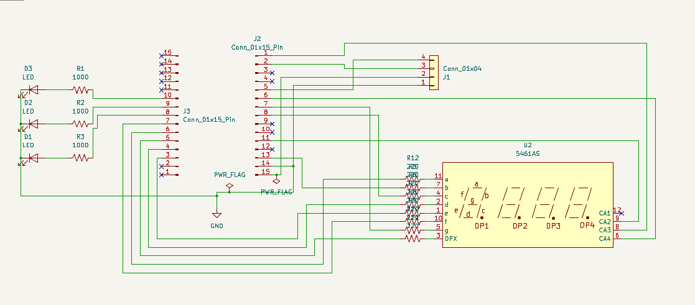
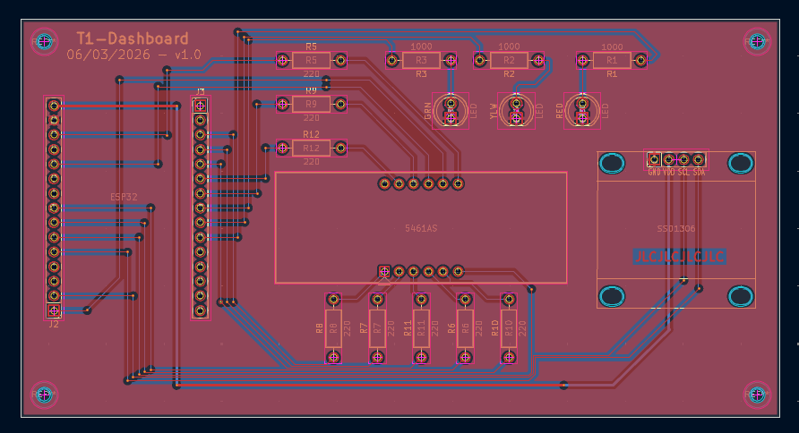

I then designed a custom PCB using KiCad after prototyping to orient components as desired and safeguard electrical connections. The design process involved creating a schematic to define the electrical connections between components, followed by laying out the PCB to optimize space.

Figure 1: PCB Schematic.

Figure 2: PCB Final Design.